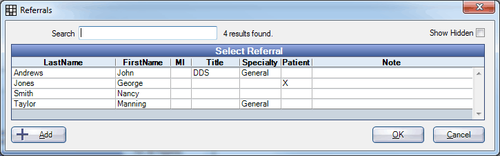
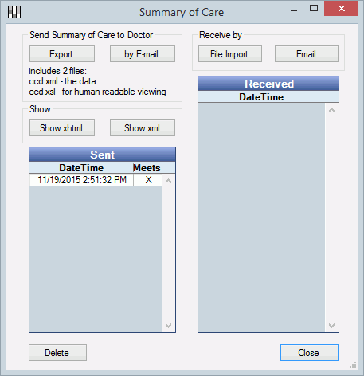

EHR Summaries of Care
Summaries of care, also known as transition of care summaries, are Continuity of Care Document (CCD) that are sent to another provider when a patient is referred or transitioned. These documents are part of the EHR Health Information Exchange objective in EHR Modified Stage 2.
This page contains the following information:
- Providing a Summary of Care (measure 1)
- Sending a Summary of Care Electronically (measure 2)
- Previewing / Printing a Summary of Care
- Receiving a Summary of Care
- Troubleshooting
Providing a summary of care
Creating a Referral automatically provides a summary of care to the patient portal (measure 1).
- On the EHR Dashboard, click Enter Referrals, then Referral To.
 - Highlight the provider from whom the document came, then click OK to select. To add a new referral click Add. The referral must be marked Is Doctor. Do not select None as the referral.

- At a minimum, select the Referring Provider and make sure Transition of Care is checked. Click OK to close the Edit Referral Attachment window.
Referring provider default logic in version 14.3: For referring provider, by default the logged in provider is selected. If a provider is not logged in, the provider from most recent appointment is the default. If there is no provider on the most recent appointment, the patient's primary provider is the default.
- The referral should be highlighted. Click Close to select.
The program will attempt to automatically send a summary of care to the patient portal. If successful, a dated entry will be added to the Sent grid, an X will indicate it counted towards SummaryofCare (measure 1). If you are notified that information is missing, fill in the information then try again.
Sending a summary of care electronically
There are two ways to send a summary of care electronically (measure 2). Both require that you first have a method of securely sending summaries of care. You have two options:
- Send directly from Open Dental using Encrypted Email. This requires obtaining, installing, and sharing email security certificates.
- Contract with a Health Information Service Provider (HISP) to perform authentication, encryption, and trust verification on your behalf. You can then export summaries of care and use the HISP to send securely.
Email directly from Open Dental
- On the EHR Dashboard, click Send/Receive summary of care.
 - Click by Email.
- Confirm and highlight the refer to provider (who the summary of care will be sent to), then click OK.
- The Edit Email Message window will open with the summary of care files attached. Enter the email message, and any other details. See Email Message Edit.
- Click Direct Message to send the email securely.
Export then send using a secure web service (HISP)
- On the EHR Dashboard, click Send/Receive summary of care.
- On the Summary of Care window, click Export.
- Confirm and highlight the refer to provider (who the summary of care will be sent to), then click OK.
- Select where to export the summary of care CCD files on your computer, then click OK to export it.
- Use a secure web service (e.g. a HISP) to send the files.
Previewing/printing a summary of care
- On the EHR Dashboard, click Send/Receive summary of care.
- On the Summary of Care window, click Show xhtml.
- Confirm and highlight the refer to provider (who the summary of care will be sent to), then click OK. The Summary of Care file will open in human-readable format.

- Click Print to print the file. Click Show xml to view the xml version of the file. Click Close to close the window.
Receiving a summary of care
The Received grid lists summaries of care (by date) that have been received from another provider. These files can be used for another EHR measure: Medication Reconciliation.
- File Import: Import a summary of care (ccd.xml) file from a location on your computer. The file will open, and a log entry will appear in the Received grid.
- Email: Open the Email Inbox to receive a summary of care that has been emailed to you.
Troubleshooting
Problem: For the summary of care measure, you have entered a referral and provided a summary of care, but it is not counting in the measure calculation.
Solution: The summaries of care may not be attached to a referral. This can happen when a referral is entered separately from providing the summary of care, or if you click none for the referral when providing the summary of care. To attach the referrals to the summaries of care, update to version 14.3, then run Database Maintenance.
Problem: Every time you generate a referral / summary of care, a WebMail is automatically sent to the patient.
Solution: This is the default setting to notify the patient. If you would like to turn off automatic summary of care WebMails, see EHR Settings.